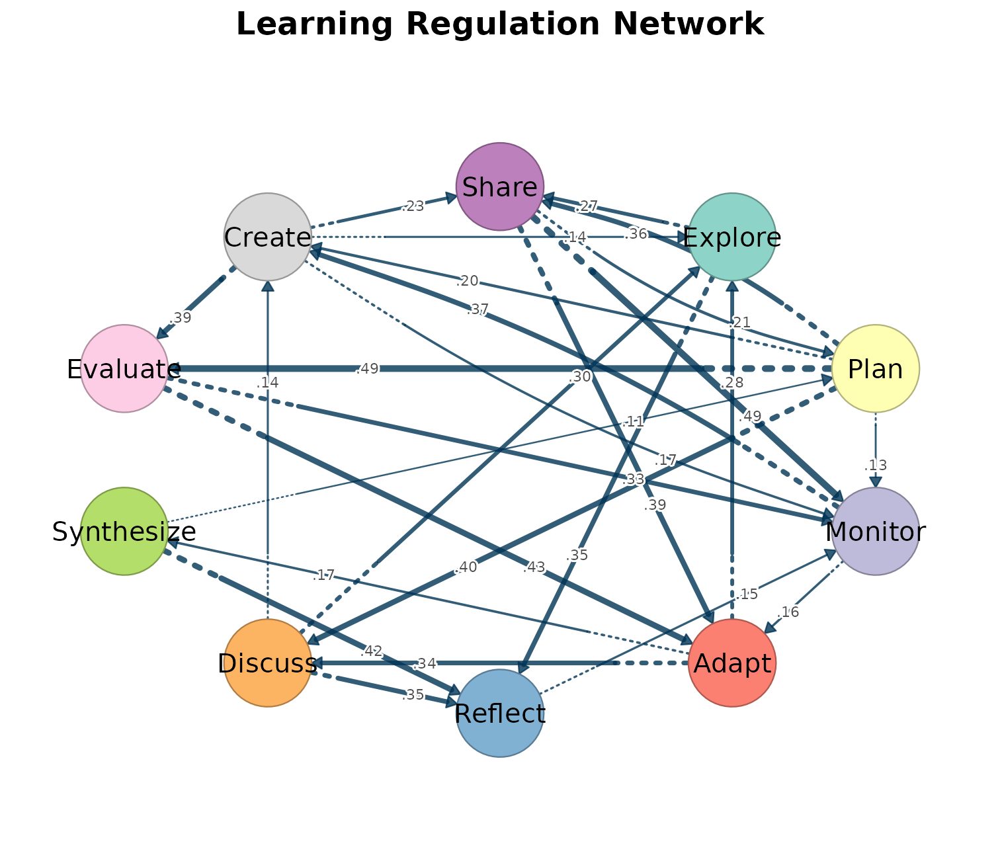
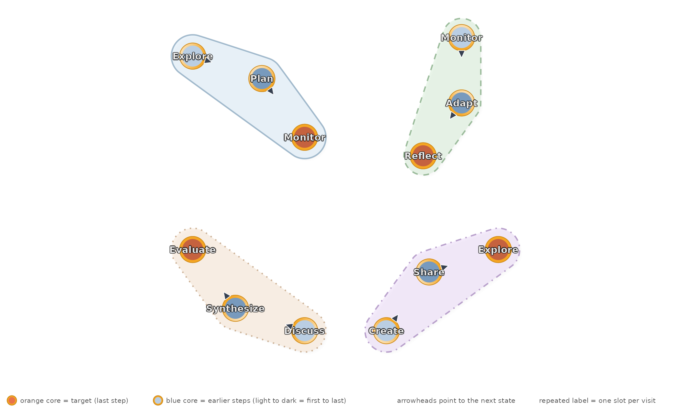

Introduction to cograph
Mohammed Saqr and Sonsoles López-Pernas
Source:vignettes/introduction.Rmd
introduction.RmdWhy cograph
R offers several network packages, each with its own data format and interface, among them igraph for graph algorithms, qgraph for psychometric networks, statnet for statistical network models and tidygraph for data manipulation. An analysis that uses more than one of them begins by converting the network between their formats.
cograph is designed as a modern R package that offers a comprehensive set of analysis options for social and complex networks, one that is tidy and simple to work with, and above all feature-rich and beautiful. cograph accepts the formats of all of these packages without conversion and returns its own results as tidy data frames. cograph visualizes networks with specialized styling for transition and psychological networks, and plots the results of bootstrap, permutation and stability analyses directly. cograph offers a family of wrangling verbs for selecting, filtering, thresholding and editing networks, a large collection of node centrality measures across all major families, and a wide array of network-level statistics from density and diameter to efficiency and clique size. For community structure, cograph provides a range of detection algorithms together with consensus, comparison and significance testing of partitions, and for local structure, cograph provides motif analysis that identifies the nodes forming each pattern. cograph also supports robustness and vulnerability analysis, backbone extraction with the disparity filter, hierarchical plots for multi-cluster networks, multilayer networks and higher-order pathways. cograph’s figures carry statistical annotations such as confidence intervals, p-values and significance stars.
The examples below use regulation_net, a synthetic
weighted transition network among ten learning states such as Explore,
Plan and Reflect, included in the package.
Plotting
cograph offers tools for visualizing networks through
splot() and a set of specialized plots.
splot() plots any supported network input with base R
graphics and has arguments for controlling the layout, the nodes and
their pie and donut decorations, the edges with their curvature, arrows
and labels, the legends and the theme. It has specialized styling for
transition networks (tna_styling) and psychological
networks (psych_styling), and it plots the result objects
of tna and Nestimate directly, including bootstrap, permutation and
stability results, multilevel VAR models and group comparisons.
Heterogeneous transition networks are plotted with
plot_htna().
splot(regulation_net, tna_styling = TRUE, minimum = 0.1,
title = "Learning Regulation Network")
Specialized plots
cograph offers a wide array of network plots across visualization domains. These include transitions, flows and individual trajectories over time, network evolution in temporal small multiples and three-dimensional prisms, weight matrices as heatmaps and chord diagrams, centrality profiles with their distributions, comparisons and stability, edge-weight and degree distributions, motifs, comparisons between networks, bootstrap confidence intervals and permutation tests, mixed directed and undirected networks, multi-cluster, multi-group and multilayer structure, community overlays, higher-order pathways and robustness curves.
| Function | Purpose |
|---|---|
splot() |
Network graph (base R) |
plot_tna() / tplot()
|
TNA-style wrappers with qgraph-compatible parameters |
plot_chord() |
Chord diagram (directed/undirected ribbons) |
plot_heatmap() |
Adjacency heatmap with clustering |
plot_ml_heatmap() |
Multi-layer comparison heatmap |
plot_transitions() / plot_alluvial()
|
Alluvial / Sankey flow diagrams |
plot_trajectories() |
Individual trajectory tracking |
plot_difference() |
Difference network between two matrices |
plot_comparison_heatmap() |
Side-by-side heatmap comparison |
plot_mixed_network() |
Directed + undirected edges combined |
plot_bootstrap_forest() |
Bootstrap CI forest plots (linear, circular, grouped) |
plot_edge_diff_forest() |
Edge difference plots (linear, circular, chord, tile) |
plot_simplicial() |
Higher-order pathway blob overlays |
overlay_communities() |
Community blob overlays on network |
plot_mcml() |
Two-layer hierarchical cluster visualization |
plot_mtna() |
Flat multi-cluster layout |
plot_mlna() |
Stacked multilayer 3D perspective |
plot_htna() |
Multi-group heterogeneous TNA layout |
plot_robustness() |
Robustness degradation curves |
plot_permutation() /
plot_group_permutation()
|
Permutation test results |
plot_centrality() /
plot_centrality_distribution()
|
Centrality profiles and their distributions |
plot_centrality_heatmap() /
plot_centrality_compare()
|
Centrality across nodes and groups |
plot_net_stability() |
Centrality stability results |
plot_edge_weights() /
plot_degree_correlation()
|
Edge-weight distribution and degree-degree correlation |
plot_motifs() |
Motif and subgraph results |
plot_network_evolution() |
Network evolution in small multiples |
plot_temporal() |
Temporal network as a three-dimensional prism |
plot_simplicial(regulation_net,
c("Explore Plan -> Monitor",
"Monitor Adapt -> Reflect",
"Discuss Synthesize -> Evaluate",
"Create Share -> Explore"),
dismantled = TRUE, ncol = 2,
title = "Higher-Order Pathways")
Input formats
cograph accepts adjacency matrices, edge lists, and igraph, statnet,
qgraph and tna objects without conversion. Its conversion functions
export a network to igraph, statnet, matrix and edge-list formats for
exchange with other packages, and from_qgraph() imports the
styling of a qgraph plot.
| Format | Example |
|---|---|
| Matrix | splot(regulation_net) |
| Edge list | splot(data.frame(from = "A", to = "B", weight = 1)) |
| igraph | splot(igraph::make_ring(5)) |
| statnet | splot(network::network(regulation_net)) |
| qgraph | from_qgraph(q) |
| tna | splot(tna::tna(data)) |
| Function | Output |
|---|---|
as_cograph(x) |
cograph_network object |
to_igraph(x) |
igraph object |
to_matrix(x) |
Adjacency matrix |
to_data_frame(x) / to_df(x)
|
Edge list data frame |
to_network(x) |
statnet network object |
from_qgraph(q) |
Extract qgraph styles into cograph |
Wrangling
cograph offers a family of wrangling verbs for selecting and
filtering nodes and edges, thresholding and transforming weights, and
restructuring and editing a network. Every verb accepts any supported
input, takes its options as named arguments and returns a network, so
verbs chain with the native pipe. as.data.frame() returns
the edges as a tidy data frame, and
as.data.frame(what = "nodes") returns the nodes.
strong <- filter_edges(regulation_net, weight > 0.3)
as.data.frame(strong)
#> from to weight
#> 1 Evaluate Monitor 0.33
#> 2 Share Monitor 0.49
#> 3 Evaluate Adapt 0.43
#> 4 Share Adapt 0.39
#> 5 Explore Reflect 0.35
#> 6 Discuss Reflect 0.35
#> 7 Synthesize Reflect 0.42
#> 8 Plan Discuss 0.40
#> 9 Adapt Discuss 0.34
#> 10 Plan Evaluate 0.49
#> 11 Create Evaluate 0.39
#> 12 Monitor Create 0.37
#> 13 Plan Share 0.36select_nodes() selects nodes by name or index, the top
nodes by any centrality measure, the neighbours of given nodes up to a
chosen order, or the nodes of a connected component.
select_edges() selects the strongest edges, the edges
involving or joining given sets of nodes, bridges and mutual ties.
Centrality measures named in a selection are computed when the verb
runs.
top3 <- select_nodes(regulation_net, top = 3, by = "betweenness")
get_labels(top3)
#> [1] "Plan" "Monitor" "Adapt"filter_nodes() keeps the nodes that satisfy logical
expressions over node attributes, any centrality measure, and structural
properties such as component membership, k-core, isolation and cut
vertices. filter_edges() keeps the edges that satisfy
expressions over edge columns, such as
weight > mean(weight). Filters combine with the other
verbs into pipelines that prepare a network for analysis in a single,
reproducible expression. The pipeline below keeps the ties with weights
of at least 0.3, removes the nodes left without ties, and adds each
node’s degree and a hub indicator to the node table.
regulation_net |>
threshold_edges(minimum = 0.3) |>
remove_isolates() |>
mutate_nodes(deg = degree, hub = degree >= 3) |>
as.data.frame(what = "nodes")
#> id label name x y deg hub
#> 1 1 Explore Explore NA NA 2 FALSE
#> 2 2 Plan Plan NA NA 3 TRUE
#> 3 3 Monitor Monitor NA NA 3 TRUE
#> 4 4 Adapt Adapt NA NA 3 TRUE
#> 5 5 Reflect Reflect NA NA 3 TRUE
#> 6 6 Discuss Discuss NA NA 4 TRUE
#> 7 7 Synthesize Synthesize NA NA 1 FALSE
#> 8 8 Evaluate Evaluate NA NA 4 TRUE
#> 9 9 Create Create NA NA 2 FALSE
#> 10 10 Share Share NA NA 3 TRUESelecting
cograph provides functions for extracting ego networks of several orders, connected components, k-cores, bridges and the edges between two sets of nodes.
| Function | Purpose |
|---|---|
filter_edges(x, ...) |
Filter by weight, endpoints, any edge column |
filter_nodes(x, ...) |
Filter by degree, centrality, label |
select_nodes(x, ...) |
Top-N by centrality, by name, neighbors, component |
select_edges(x, ...) |
Top-N, involving, between, bridges, mutual |
select_neighbors(x, of) |
Ego-network extraction (multi-hop) |
select_component(x) |
Largest or named component |
select_top(x, n, by) |
Top-N nodes by any centrality |
select_k_core(x, k) |
The k-core |
split_components(x) |
One network per component |
select_bridges(x) |
Bridge edges only |
select_top_edges(x, n) |
Top-N edges by weight |
select_edges_involving(x, nodes) |
Edges touching specific nodes |
select_edges_between(x, s1, s2) |
Edges between two node sets |
subset_nodes(x, ...) /
subset_edges(x, ...)
|
Aliases of the filters |
Weights
cograph provides functions for thresholding edges by weight, count, proportion or density, binarizing weights, and symmetrizing a directed network by maximum, minimum, mean, sum or mutuality. Further functions normalize weights by row, column, maximum, sum or range, and convert similarities into distances for path-based measures.
| Function | Purpose |
|---|---|
threshold_edges(x, ...) |
Keep edges by weight, count, proportion, density |
binarize(x) |
Replace weights with 0/1 |
symmetrize(x, method) |
Combine opposite arcs into one edge |
normalize_weights(x, method) |
Rescale by row, column, max, sum, min-max |
invert_weights(x, method) |
Similarities to distances |
Structure and editing
cograph provides functions for converting between directed and undirected networks, reversing arcs, contracting groups of nodes into single nodes with aggregated weights, extracting minimum or maximum spanning trees and forming the complement of a network. Nodes and edges can be added or removed, their attributes computed, and two networks combined by union, intersection or difference.
| Function | Purpose |
|---|---|
to_undirected(x) / to_directed(x)
|
Change directedness |
reverse_edges(x) |
Reverse every arc |
remove_isolates(x) |
Drop nodes with no edges |
contract_nodes(x, groups) |
Collapse groups into single nodes |
spanning_tree(x) |
Minimum or maximum spanning tree |
complement_network(x) |
Join the non-adjacent pairs |
reorder_nodes(x, order) /
rename_nodes(x, from, to)
|
Node order and labels |
add_nodes() / remove_nodes() /
add_edges() / remove_edges()
|
Editing |
mutate_nodes(x, ...) /
mutate_edges(x, ...)
|
Compute and store attributes |
bind_networks(x, y, method) |
Union, intersection, difference |
simplify(x) |
Remove multi-edges and self-loops |
The node and edge tables, labels, size, direction, group assignments and layout of a network object can be read and set with accessor functions.
| Function | Purpose |
|---|---|
as.data.frame(x) |
Tidy edge table (what = "nodes" for nodes) |
get_nodes(x) / set_nodes(x, df)
|
Node data frame |
get_edges(x) / set_edges(x, df)
|
Edge data frame |
get_labels(x) |
Node label vector |
n_nodes(x) / n_edges(x)
|
Counts |
is_directed(x) |
Directedness |
set_groups(x) / get_groups(x)
|
Group assignments |
set_layout(x, layout) |
Layout coordinates |
Centrality
cograph offers 191 node centrality measures through
centrality(), which returns a tidy data frame with a column
for each measure, and through individual functions that return a single
measure. The measures span degree and strength, distance and closeness,
shortest-path brokerage, spectral and walk-based influence,
neighbourhood cohesion, directed prestige and community-based roles.
Measures that are also implemented elsewhere are tested against igraph,
sna, centiserve, brainGraph, influenceR, netrankr and NetworkX. The
examples in this section use the built-in
student_interactions edge list, which
centrality() accepts directly.
data(student_interactions)
centrality(student_interactions)
#> node degree_all strength_all closeness_all betweenness eigenvector
#> 1 Ac 33 129 0.01754386 26.342857 1.000000e+00
#> 2 Ad 20 36 0.01754386 42.541520 1.096110e-01
#> 3 Fi 24 51 0.01666667 35.721634 1.789565e-01
#> 4 Ik 14 24 0.01666667 25.844874 1.551369e-02
#> 5 Vx 26 43 0.01960784 90.717124 7.238902e-02
#> 6 Rt 20 37 0.01785714 63.135739 1.159931e-01
#> 7 Km 11 16 0.01639344 18.175108 2.804725e-02
#> 8 Gj 19 31 0.01818182 114.599049 3.265786e-02
#> 9 Bd 12 18 0.01612903 21.769264 9.607736e-03
#> 10 Ce 10 13 0.01612903 16.648629 4.473504e-03
#> 11 Oq 14 20 0.01754386 34.151726 2.293068e-02
#> 12 Ya 13 19 0.01612903 18.216122 1.758656e-02
#> 13 Mo 12 17 0.01587302 38.264502 1.003629e-01
#> 14 Hj 12 19 0.01754386 85.816522 2.013125e-02
#> 15 Tv 10 13 0.01666667 25.916306 1.320877e-02
#> 16 Eg 10 12 0.01639344 22.335171 5.783916e-03
#> 17 Pr 11 18 0.01666667 23.974060 7.602231e-02
#> 18 Qs 15 19 0.01785714 76.910851 1.511764e-02
#> 19 Xz 14 18 0.01639344 22.280159 8.533484e-03
#> 20 Np 8 8 0.01666667 12.044048 1.549052e-02
#> 21 Dg 13 13 0.01886792 29.240901 6.260099e-03
#> 22 Hk 16 25 0.01818182 72.176441 1.201845e-01
#> 23 Wy 11 16 0.01639344 34.014358 1.054705e-03
#> 24 Jl 15 18 0.01818182 67.359085 5.009801e-02
#> 25 Fh 21 55 0.01818182 78.588877 2.817489e-01
#> 26 Zb 7 8 0.01538462 9.583333 5.429715e-05
#> 27 Eh 7 13 0.01428571 34.325000 1.163185e-03
#> 28 Be 14 16 0.01851852 105.250898 2.203252e-03
#> 29 Df 8 10 0.01562500 11.026190 4.800876e-06
#> 30 Cf 12 15 0.01724138 119.109163 1.243207e-02
#> 31 Su 6 9 0.01369863 33.154401 1.028472e-04
#> 32 Ln 7 8 0.01408451 5.749708 1.376854e-02
#> 33 Gi 3 4 0.01351351 0.000000 0.000000e+00
#> 34 Uw 4 7 0.01250000 0.000000 0.000000e+00
#> pagerank
#> 1 0.285861728
#> 2 0.052985644
#> 3 0.077591140
#> 4 0.024836857
#> 5 0.057364714
#> 6 0.042552472
#> 7 0.016655998
#> 8 0.025444498
#> 9 0.014321668
#> 10 0.010679742
#> 11 0.016087378
#> 12 0.016588876
#> 13 0.031180263
#> 14 0.019051413
#> 15 0.012644206
#> 16 0.010425091
#> 17 0.022794289
#> 18 0.019784870
#> 19 0.013229134
#> 20 0.008466679
#> 21 0.010345027
#> 22 0.040383192
#> 23 0.009067435
#> 24 0.020529375
#> 25 0.070538086
#> 26 0.005635780
#> 27 0.010080122
#> 28 0.009378924
#> 29 0.004957518
#> 30 0.017877547
#> 31 0.005136500
#> 32 0.007628879
#> 33 0.005483193
#> 34 0.004411765By default, centrality() returns six classical measures:
degree, strength, closeness, betweenness, eigenvector centrality and
PageRank. Any other measure is chosen by name with
measures, and type = "all" returns every
measure of ordinary computational cost.
centrality_degree(student_interactions)
#> Ac Ad Fi Ik Vx Rt Km Gj Bd Ce Oq Ya Mo Hj Tv Eg Pr Qs Xz Np Dg Hk Wy Jl Fh Zb
#> 33 20 24 14 26 20 11 19 12 10 14 13 12 12 10 10 11 15 14 8 13 16 11 15 21 7
#> Eh Be Df Cf Su Ln Gi Uw
#> 7 14 8 12 6 7 3 4
centrality_pagerank(student_interactions)
#> Ac Ad Fi Ik Vx Rt
#> 0.285861728 0.052985644 0.077591140 0.024836857 0.057364714 0.042552472
#> Km Gj Bd Ce Oq Ya
#> 0.016655998 0.025444498 0.014321668 0.010679742 0.016087378 0.016588876
#> Mo Hj Tv Eg Pr Qs
#> 0.031180263 0.019051413 0.012644206 0.010425091 0.022794289 0.019784870
#> Xz Np Dg Hk Wy Jl
#> 0.013229134 0.008466679 0.010345027 0.040383192 0.009067435 0.020529375
#> Fh Zb Eh Be Df Cf
#> 0.070538086 0.005635780 0.010080122 0.009378924 0.004957518 0.017877547
#> Su Ln Gi Uw
#> 0.005136500 0.007628879 0.005483193 0.004411765The measures fall into seven families: degree, strength and local
connectivity; distance and closeness; shortest-path brokerage and flow;
spectral, walk and influence; neighbourhood structure and cohesion;
community and group-based roles; and directed prestige and hierarchy.
Recent measures from these families include Trust-PageRank, randomized
shortest-path betweenness, the Lhc index and the BG-index, and any of
them can be requested alongside the classical ones. Community-based
measures also require a partition, supplied with
membership. The centrality catalogue documents every
measure with its definition, interpretation and an example.
centrality(student_interactions,
measures = c("collective_influence", "harmonic", "rsp_betweenness",
"trust_pagerank", "lhc", "beta_measure"),
sort_by = "trust_pagerank", digits = 3)
#> node collective_influence_all harmonic_all rsp_betweenness trust_pagerank
#> 1 Ac 2048 21.333 15055.406 0.088
#> 2 Vx 2950 24.000 3387.848 0.074
#> 3 Rt 2603 21.500 3724.557 0.052
#> 4 Ad 3154 21.667 4614.339 0.045
#> 5 Fi 3772 20.500 5264.067 0.044
#> 6 Fh 3540 22.000 5578.933 0.043
#> 7 Gj 3168 22.000 1648.887 0.040
#> 8 Hk 3090 22.000 3731.066 0.035
#> 9 Jl 2954 22.333 1450.774 0.035
#> 10 Dg 2340 23.000 455.822 0.034
#> 11 Ik 2522 20.167 1538.618 0.033
#> 12 Be 2860 22.500 337.701 0.033
#> 13 Oq 2691 21.667 1022.913 0.032
#> 14 Hj 2354 21.333 1246.753 0.030
#> 15 Qs 3192 21.833 1237.349 0.030
#> 16 Cf 2585 20.833 1088.757 0.029
#> 17 Ya 2652 20.167 1060.565 0.026
#> 18 Mo 2475 19.333 2926.244 0.026
#> 19 Xz 3172 20.333 515.158 0.024
#> 20 Pr 2450 19.833 1998.787 0.023
#> 21 Bd 2728 19.500 778.216 0.022
#> 22 Eg 2277 20.000 433.358 0.022
#> 23 Km 2350 19.667 1129.461 0.021
#> 24 Ce 2484 19.500 416.241 0.021
#> 25 Tv 2376 19.833 760.272 0.021
#> 26 Wy 2890 20.000 203.339 0.021
#> 27 Np 1827 20.167 419.853 0.017
#> 28 Df 1953 18.833 37.163 0.017
#> 29 Zb 1836 18.333 66.797 0.012
#> 30 Eh 1896 16.833 292.769 0.012
#> 31 Ln 1890 17.333 339.688 0.012
#> 32 Su 1630 16.333 86.133 0.011
#> 33 Gi 642 15.833 40.747 0.007
#> 34 Uw 705 14.833 33.000 0.007
#> lhc beta_measure
#> 1 5498.268 0.830
#> 2 4901.961 0.894
#> 3 4109.675 0.918
#> 4 3743.248 0.709
#> 5 3734.960 0.793
#> 6 3693.777 1.809
#> 7 3526.831 1.324
#> 8 3256.110 0.831
#> 9 3229.885 1.559
#> 10 3186.124 1.020
#> 11 3140.255 0.524
#> 12 2967.967 2.311
#> 13 3110.130 0.987
#> 14 2910.090 0.513
#> 15 3021.652 1.310
#> 16 2745.034 1.084
#> 17 2706.990 0.625
#> 18 2684.175 0.782
#> 19 2552.081 0.774
#> 20 2470.132 0.979
#> 21 2396.457 0.702
#> 22 2372.132 0.818
#> 23 2300.650 0.412
#> 24 2351.081 0.678
#> 25 2330.983 1.121
#> 26 2100.728 0.935
#> 27 2021.546 0.615
#> 28 1909.727 0.789
#> 29 1394.676 1.027
#> 30 1358.228 1.181
#> 31 1437.061 0.588
#> 32 1338.202 1.515
#> 33 608.184 0.262
#> 34 705.928 1.783Network properties
cograph offers network-level statistics through
network_summary(), which returns density, diameter, mean
distance, centralization, reciprocity, transitivity and degree
assortativity in a data frame with one row for the network, and up to 35
statistics with detailed = TRUE and
extended = TRUE. Individual functions compute
small-worldness, global and local efficiency, the rich-club coefficient,
girth, radius, bridges, cut vertices, vertex connectivity and clique
size.
network_summary(regulation_net)
#> node_count edge_count density component_count diameter mean_distance min_cut
#> 1 10 30 0.333 1 0.97 0.435 1
#> centralization_degree centralization_in_degree centralization_out_degree
#> 1 0.123 0.333 0.222
#> centralization_betweenness centralization_closeness centralization_eigen
#> 1 0.149 0.238 0.479
#> transitivity reciprocity assortativity_degree
#> 1 0.423 0.111 -0.116| Function | Purpose |
|---|---|
network_summary() |
Up to 35 statistics (density, diameter, clustering, etc.) |
network_small_world() |
Small-world coefficient |
network_rich_club() |
Rich-club coefficient |
network_global_efficiency() |
Global efficiency |
network_local_efficiency() |
Local efficiency |
degree_distribution() |
Degree histogram |
network_girth() |
Shortest cycle |
network_radius() |
Minimum eccentricity |
network_bridges() |
Bridge edges |
network_cut_vertices() |
Articulation points |
network_vertex_connectivity() |
Minimum vertices to disconnect |
network_clique_size() |
Largest complete subgraph |
Community detection
cograph offers tools for studying community structure through
detection, consensus, comparison, quality assessment and significance
testing of partitions. communities() runs eleven community
detection algorithms, including Louvain, Leiden, Infomap, walktrap and
spinglass, through one call and returns the partition with its
modularity, and each algorithm also has its own function with a short
alias. community_consensus() runs an algorithm repeatedly
and returns the consensus partition across runs.
compare_communities() compares two partitions by variation
of information, normalized mutual information, split-join distance or
the Rand and adjusted Rand indices, cluster_quality()
scores a partition, and cluster_significance() tests its
modularity against random networks that preserve the degree sequence or
the number of edges.
comms <- communities(regulation_net, method = "walktrap")
comms
#> Community structure (walktrap)
#> Nodes: 10 | Communities: 2 | Modularity: 0.1976
#> Sizes: 5, 5
#>
#> node community
#> Explore 1
#> Plan 2
#> Monitor 2
#> Adapt 1
#> Reflect 1
#> Discuss 1
#> Synthesize 1
#> Evaluate 2
#> Create 2
#> Share 2
community_sizes(comms)
#> [1] 5 5| Function | Algorithm | Alias |
|---|---|---|
community_louvain() |
Louvain modularity | com_lv() |
community_leiden() |
Leiden (improved Louvain) | com_ld() |
community_fast_greedy() |
Fast greedy | com_fg() |
community_walktrap() |
Random walk | com_wt() |
community_infomap() |
Information flow | com_im() |
community_label_propagation() |
Label propagation | com_lp() |
community_edge_betweenness() |
Edge betweenness | com_eb() |
community_leading_eigenvector() |
Leading eigenvector | com_le() |
community_spinglass() |
Spin glass | com_sg() |
community_optimal() |
Exact optimization | com_op() |
community_fluid() |
Fluid communities | com_fl() |
| Function | Purpose |
|---|---|
community_consensus() |
Run algorithm N times, keep stable assignments |
compare_communities() |
Compare partitions (NMI, VI, Rand, adjusted Rand) |
community_sizes() |
Size of each community |
color_communities() |
Color vector from community membership |
cluster_quality() |
Quality metrics (silhouette, Dunn index) |
cluster_significance() |
Permutation-based significance testing |
detect_communities() |
Alternative interface (returns data frame) |
Motifs
cograph offers motif analysis for directed networks based on the 16
triads of the MAN classification. motifs() counts each
triad type and tests its frequency with a permutation test, across the
whole network, per actor, or within rolling and tumbling windows.
subgraphs() identifies the nodes behind each motif and
reports which node triples form each pattern, in how many sessions or
actors they occur, and whether they occur more often than expected.
plot() visualizes the counts, their significance, the
triads and the patterns.
mot <- motifs(regulation_net, significance = FALSE)
mot
#> Motif Census
#> Level: aggregate | States: 10 | Pattern: triangle
#>
#> Type distribution:
#> 030T 120C 030C 120D 120U
#> 11 3 2 2 1
#>
#> Top 5 results:
#> type count
#> 030T 11
#> 120C 3
#> 030C 2
#> 120D 2
#> 120U 1| Function | Purpose |
|---|---|
motifs() |
MAN type census with significance testing |
subgraphs() |
Named node triples forming each pattern |
motif_census() |
Low-level triad census |
extract_motifs() |
Per-individual motif extraction |
extract_triads() |
Extract specific triad types |
triad_census() |
Raw 16-type triad count |
get_edge_list() |
Edge list from tna for motif input |
Robustness
cograph offers tools for studying network robustness and
vulnerability through simulated attacks and node-level efficiency loss.
robustness() simulates the sequential removal of nodes or
edges, ordered by a centrality measure or at random, and returns the
size of the largest component at each step. The ranking can be
recomputed after every removal or fixed at the start, and random removal
is averaged over repeated runs. robustness_auc() and
robustness_summary() summarize each curve, including the
area under it, and plot_robustness() visualizes several
attack strategies together. vulnerability() computes, for
each node, the relative drop in global efficiency when that node is
removed.
robustness(regulation_net, type = "vertex", measure = "betweenness", n_iter = 100)
plot_robustness(x = regulation_net, measures = c("betweenness", "degree", "random"))| Function | Purpose |
|---|---|
robustness() |
Simulate removal attacks (vertex or edge) |
plot_robustness() |
Plot robustness curves for multiple strategies |
robustness_summary() |
AUC and summary statistics |
robustness_auc() |
Area under the robustness curve |
vulnerability() |
Relative drop in global efficiency when each node is removed |
Disparity filter
cograph offers backbone extraction for weighted networks through the
disparity filter (Serrano et al., 2009), which keeps the edges whose
weights are significantly larger than expected if each node’s strength
were spread uniformly over its ties. disparity_filter()
applies the test at a chosen significance level. For a matrix it returns
a binary matrix of the significant edges, and for a network object it
returns a backbone that splot() plots directly.
backbone <- disparity_filter(as_cograph(regulation_net), level = 0.05)
splot(backbone)Multi-cluster visualization
cograph offers hierarchical plots for multi-cluster multi-level
(MCML) networks, whose nodes belong to known clusters.
plot_mcml() shows the network as a two-layer hierarchy. The
lower layer places every node inside its cluster’s shell with the
within- and between-cluster edges, and the upper layer collapses each
cluster into a single node whose pie chart shows its share of the
initial state distribution. plot_mtna() shows the clusters
as shells in one plane, with individual edges within clusters and
summary edges between them. csum() aggregates an estimated
weight matrix into cluster-level transitions, and
summarize_clusters() estimates the Markov chain over
cluster states from the raw transition data.
clusters <- list(
Cognitive = c("Explore", "Plan", "Monitor", "Adapt", "Reflect"),
Social = c("Discuss", "Synthesize", "Share"),
Evaluative = c("Evaluate", "Create")
)
plot_mcml(regulation_net, clusters, mode = "tna")
plot_mtna(regulation_net, clusters)| Function | Architecture |
|---|---|
plot_mcml() |
Two-layer: detail nodes + summary pies |
plot_mtna() |
Flat cluster layout |
csum() |
Aggregate an estimated weight matrix to cluster level |
summarize_clusters() |
Estimate the cluster-level Markov chain from transition data |
as_tna() / as_mcml()
|
Convert cluster summaries to tna objects |
summarize_network() / cnet()
|
Extract cluster-level network (matrix aggregation) |
Multilayer networks
cograph offers tools for constructing, analysing and visualizing
multilayer and multiplex networks. supra_adjacency() builds
the supra-adjacency matrix, with the layers as its diagonal blocks and
the inter-layer coupling, diagonal, full or user-defined and weighted by
omega, off the diagonal. supra_layer() and
supra_interlayer() extract its blocks.
aggregate_layers() combines layers by sum, mean, maximum,
minimum, union or intersection, and layer_similarity()
compares two layers by Jaccard, overlap, Hamming, cosine or Pearson
similarity. plot_mlna() visualizes the layers stacked in a
three-dimensional perspective with dashed inter-layer edges, and
plot_ml_heatmap() shows each layer as a heatmap on a tilted
plane.
| Function | Purpose |
|---|---|
supra_adjacency() |
Build the supra-adjacency matrix |
supra_layer() / supra_interlayer()
|
Extract individual layers |
aggregate_layers() /
aggregate_weights()
|
Combine layers |
layer_similarity() |
Similarity between two layers |
plot_mlna() / mlna()
|
Layers stacked in 3D perspective |
plot_ml_heatmap() |
Multi-layer heatmap comparison |
Higher-order networks
cograph offers visualization of higher-order network models, which
capture sequential dependencies beyond a first-order Markov chain and
are estimated with the Nestimate package. plot_simplicial()
visualizes higher-order pathways as blobs over the network layout, from
pathway strings, higher-order network (HON) and HYPA objects, or
multi-order model transitions. Given a tna model or a Nestimate network
with sequence data, it builds the pathways itself, as a HON, as
anomalous paths under a hypergeometric null, or as association
rules.
| Function | Purpose |
|---|---|
Nestimate::build_hon() |
Higher-Order Network construction |
Nestimate::build_hypa() |
Path anomaly detection (hypergeometric null) |
Nestimate::build_mogen() |
Multi-order model selection (AIC/BIC) |
Nestimate::path_counts() |
k-step path frequencies |
plot_simplicial() |
Visualize pathways as blob overlays |
Nestimate::build_simplicial() |
Simplicial complex from cliques |
Nestimate::persistent_homology() |
Topological persistence across thresholds |
Nestimate::q_analysis() |
Multi-level structural connectivity |
Nestimate::verify_simplicial() |
Cross-validate via Euler-Poincare theorem |
TNA integration
cograph offers visualization for Transition Network Analysis (TNA)
models estimated with the tna package. splot() plots tna
models with donut rings filled by the initial probabilities, bootstrap
results with edges styled by stability, permutation tests as difference
networks, and communities and disparity backbones. Group models appear
as one panel per group, or as a single group selected with
i. plot_tna() and tplot() accept
qgraph’s argument names, so plotting code written for qgraph carries
over, and plot_htna() plots heterogeneous TNA models, whose
nodes belong to groups of different kinds, in circular, bipartite or
polygonal layouts.
| Object | What splot() does |
|---|---|
tna |
Network with donut rings, TNA styling |
group_tna |
Multi-panel grid per group |
tna_bootstrap |
Stability-styled edges |
tna_permutation |
Colored difference network |
group_tna_permutation |
Multi-panel permutation results |
tna_communities |
Network coloured by community |
tna_disparity |
Backbone filter visualization |
Palettes
cograph offers colour palettes for sequential, diverging and
categorical encodings. They include viridis, blue and red gradients, a
blue-white-red diverging scale with a configurable midpoint, the
colour-blind-safe Okabe-Ito colours and a pastel set. Each palette
function returns n colours.
| Function | Colors |
|---|---|
palette_viridis(n) |
Viridis scale |
palette_pastel(n) |
Soft pastel |
palette_blues(n) |
Blue gradient |
palette_reds(n) |
Red gradient |
palette_diverging(n) |
Blue-white-red |
palette_colorblind(n) |
Colorblind-safe |
palette_rainbow(n) |
Rainbow |
Further reading
Package resources:
- cograph function reference, complete list of all functions with examples
- cograph pkgdown site, full documentation and articles
Blog posts:
- cograph: Complex Network Analysis and Visualization, overview of the package design and capabilities
- Human–AI Interaction: A TNA with cograph, worked example analyzing 13,002 turns of human–AI coding collaboration
References:
Serrano, M. Á., Boguñá, M., & Vespignani, A. (2009). Extracting the multiscale backbone of complex weighted networks. Proceedings of the National Academy of Sciences, 106(16), 6483–6488. https://doi.org/10.1073/pnas.0808904106
Saqr, M., López-Pernas, S., Conde-González, M. Á., & Hernández-García, Á. (2024). Social Network Analysis: A Primer, a Guide and a Tutorial in R. In Learning Analytics Methods and Tutorials (pp. 491–518). Springer. https://doi.org/10.1007/978-3-031-54464-4_15
Hernández-García, Á., Cuenca-Enrique, C., Traxler, A., López-Pernas, S., Conde-González, M. Á., & Saqr, M. (2024). Community detection in learning networks using R. In Learning Analytics Methods and Tutorials (pp. 519–540). Springer. https://doi.org/10.1007/978-3-031-54464-4_16
Saqr, M., López-Pernas, S., Törmänen, T., Kaliisa, R., Misiejuk, K., & Tikka, S. (2025). Transition Network Analysis: A Novel Framework for Modeling, Visualizing, and Identifying the Temporal Patterns of Learners and Learning Processes. In Proceedings of the 15th LAK Conference (pp. 351–361). ACM. https://doi.org/10.1145/3706468.3706513
Tikka, S., López-Pernas, S., & Saqr, M. (2025). tna: An R Package for Transition Network Analysis. Applied Psychological Measurement, 49(6), 326–328. https://doi.org/10.1177/01466216251348840